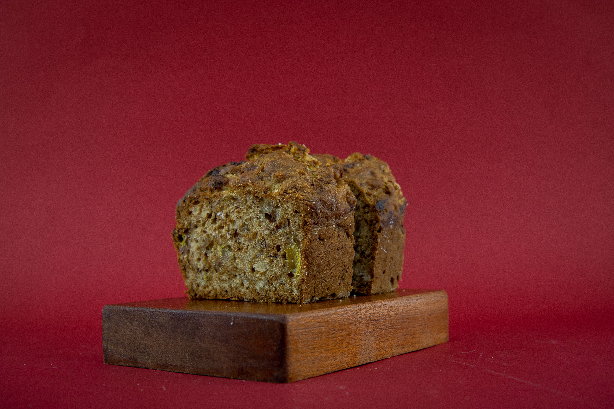

Home
Zucchini Bread

Egg-free quickbread
Delicious vegan zucchini bread. Mmm-hmmm! This recipe makes two moist and
tender loaves with shredded zucchini and applesauce. Add chopped walnuts
or chocolate chips if you like. This egg-free quickbread recipe uses
simple pantry staples and easy steps. Home cooks love the applesauce and
flax combo, which keeps the bread tender for days.
Ingredients for 2 (9x5-inch) loaf pans:
- 3 cups all-purpose flour,
- 3 tablespoons flax seeds (Optional),
- 2 teaspoons ground cinnamon,
- 1 teaspoon salt,
- 1 teaspoon baking soda,
- ½ teaspoon baking powder,
- ½ teaspoon arrowroot powder (Optional),
- 1 cup unsweetened applesauce,
- 1 cup white sugar,
- 1 cup packed brown sugar,
- ¾ cup vegetable oil,
- 2 teaspoons vanilla extract,
- 2 ½ cups shredded zucchini.
Steps:
-
Gather the ingredients. Preheat the oven to 325 degrees F (165 degrees
C). Grease and flour two 9x5-inch loaf pans.
-
Whisk flour, flax seeds, cinnamon, salt, baking soda, baking powder,
and arrowroot together in a bowl until evenly blended; set aside.
-
Whisk applesauce, white sugar, brown sugar, vegetable oil, and vanilla
extract in a separate bowl until smooth. Fold in flour mixture and
shredded zucchini until moistened.
- Divide batter between the prepared loaf pans.
-
Bake in the preheated oven until a toothpick inserted into the center
comes out clean, about 70 minutes. Cool briefly in the pans before
removing to cool completely on a wire rack.